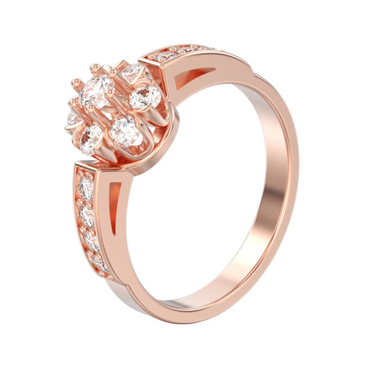
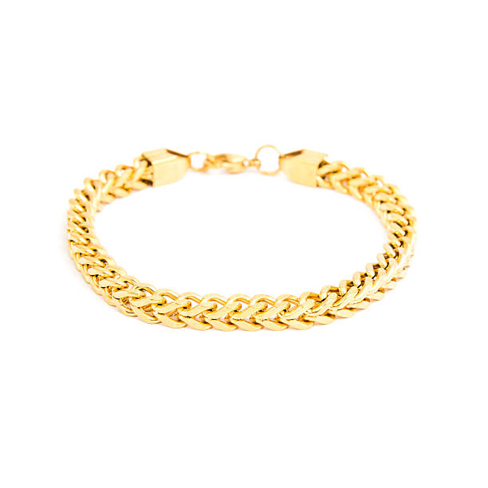
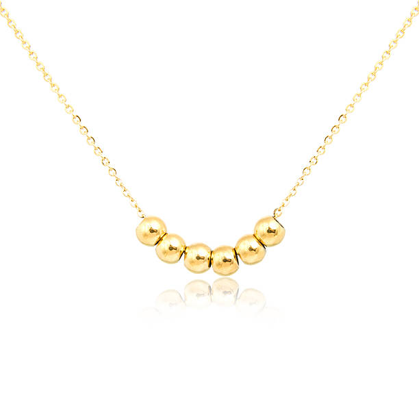
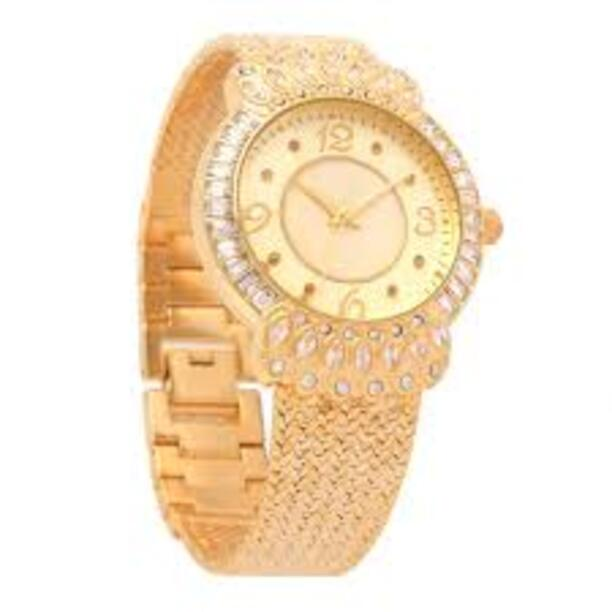

Anillos

Los anillos son joyas antiguas y atemporales que pueden estar elaborados con materiales y piedras preciosas. Además de su valor estético, tienen un significado simbólico importante, representando el amor, el compromiso, los logros y el estatus social. Son una forma elegante y significativa de expresar la personalidad única y agregar un toque de elegancia a cualquier atuendo.
Leer más
Brazaletes

Las pulseras o brazaletes pueden tener un significado simbólico importante. Por ejemplo, las pulseras de la amistad pueden representar lazos cercanos entre amigos, mientras que las pulseras de la identidad pueden simbolizar la pertenencia a un grupo o comunidad. Pueden ser una forma de expresar la personalidad y el estilo únicos de una persona.
Leer más
Collares

Además de su valor estético, los collares también pueden tener un significado simbólico importante. Por ejemplo, los collares con colgantes religiosos pueden representar la fe y la espiritualidad de una persona, mientras que los collares con amuletos pueden simbolizar la protección y la buena suerte.
Leer más
Relojes

Los relojes son accesorios de moda que pueden estar elaborados con diferentes materiales como el acero inoxidable, cuero, cerámica y oro. Los relojes también pueden incluir características adicionales como cronómetros, calendarios y monitores de actividad física. Los relojes de lujo de alta gama, por ejemplo, a menudo incluyen detalles elaborados y gemas preciosas para agregar una sensación de sofisticación y elegancia.
Leer más